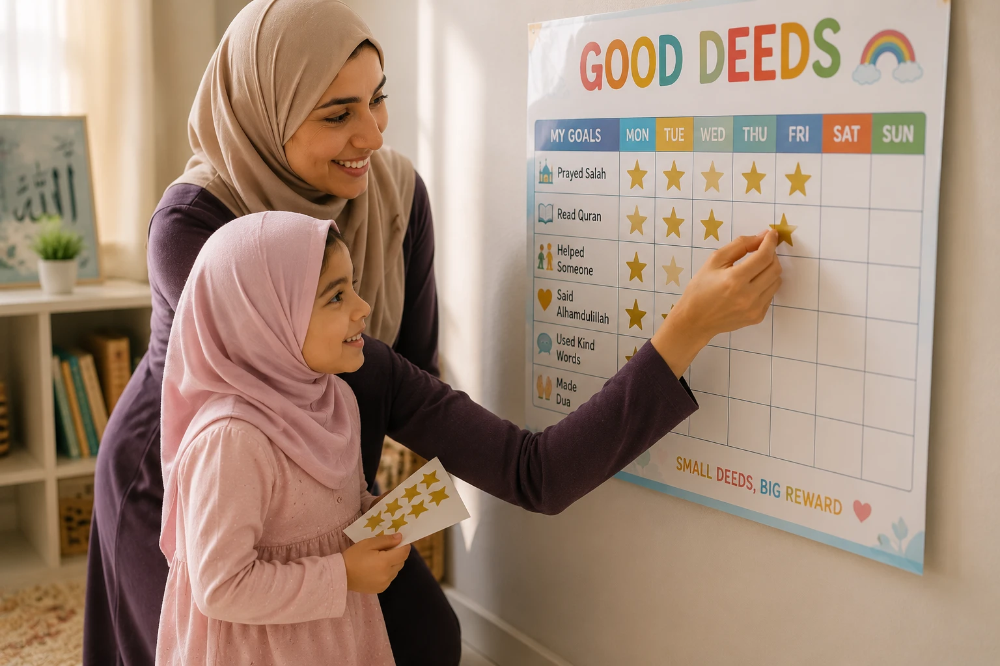

The word "discipline" often conjures images of strictness, punishment, and fear. But in Islam, discipline is known as Tarbiyah — a beautiful, comprehensive concept that means to nurture, grow, and cultivate. Just as a gardener gently guides a plant toward the sunlight, a Muslim parent guides their child toward righteousness with wisdom, patience, and immense mercy. In this comprehensive guide, we will explore gentle, prophetic methods to correct your child's behavior without breaking their spirit or damaging your bond.
📖 In This Complete Guide, You'll Learn:
- The profound difference between Islamic Tarbiyah (nurturing) and harsh punishment
- Real-life examples of how the Prophet (PBUH) corrected children's mistakes
- Practical, gentle techniques: Redirection, Natural Consequences, and "Time-In"
- How to use positive reinforcement to build intrinsic Islamic motivation
- How to manage your own anger as a parent (The Prophetic anger management toolkit)
- Common disciplinary mistakes that push children away from Deen
🔑 Key Takeaways
- Connection before correction: A child cannot learn from someone they fear.
- The Prophet (PBUH) never struck a child, a woman, or a servant. Gentleness is a sign of strength, not weakness.
- Address the behavior, not the child's character. (e.g., "Hitting is not okay," not "You are a bad boy.")
- Model the behavior you want to see. Children mimic your emotional regulation.
- Every mistake is a teaching opportunity, not a reason for shame.
📑 In This Article
- Tarbiyah vs. Punishment: The Islamic Paradigm
- The Prophet's (PBUH) Masterclass in Gentle Correction
- Practical Technique 1: Positive Reinforcement
- Practical Technique 2: Natural & Logical Consequences
- Practical Technique 3: The "Time-In" (Not Time-Out)
- Managing Parental Anger (The Prophetic Toolkit)
- Common Disciplinary Mistakes to Avoid
- Frequently Asked Questions
- Final Thoughts
Tarbiyah vs. Punishment: The Islamic Paradigm
In modern parenting, discipline is often reactive: a child misbehaves, and the parent reacts with a penalty. In Islam, Tarbiyah is proactive. It is about creating an environment where good behavior is the norm, and when mistakes happen, they are treated as learning opportunities, not crimes.
Allah describes the Prophet Muhammad (PBUH) as a mercy to the worlds. His interactions with children were marked by unparalleled gentleness. He understood that a child's brain is still developing, their impulses are strong, and their primary need is to feel safe and loved, even when they are being corrected.
Aisha (RA) reported: "The Messenger of Allah (PBUH) never struck anything with his hand, neither a woman nor a servant, unless he was fighting in the cause of Allah."
— Sahih Muslim 2328If the Prophet (PBUH), who received direct revelation, never resorted to physical punishment for behavioral issues, how can we justify it in our homes? Our goal is to raise children who obey Allah out of love and understanding, not out of fear of their parents' wrath.
The Prophet's (PBUH) Masterclass in Gentle Correction
We don't have to guess how to discipline Islamically; we have the ultimate role model. Let's look at two powerful examples:
Example 1: The Young Boy and the Dining Table
A young boy was eating food without saying Bismillah and was reaching across the table. The Prophet (PBUH) did not yell, snatch the food, or shame him in front of others. He gently placed his hand on the boy's shoulder and said: "O young boy, mention the Name of Allah, eat with your right hand, and eat from what is nearest to you." (Bukhari 5376).
The Lesson: Correct the behavior calmly, privately, and provide the exact alternative you want to see.
Example 2: The Bedouin in the Mosque
A Bedouin stood up and urinated in the corner of the mosque. The Companions were furious and rushed to stop him aggressively. The Prophet (PBUH) stopped them, let the man finish, and then gently explained that mosques are places of purity, not filth, and ordered the area to be cleaned with water.
The Lesson: Do not let your anger escalate a situation. Address the root cause (ignorance) with wisdom, not aggression.
Practical Technique 1: Positive Reinforcement
Children crave attention. If they only get attention when they misbehave, they will misbehave. Catch them being good and praise them specifically.
How to Do It Islamically:
- Be Specific: Instead of "Good job," say, "Masha'Allah, I noticed how patiently you waited for your turn. That shows great self-control."
- Tie it to Allah: "Allah loves those who are truthful. I am so proud of you for telling the truth just now."
- Use Visual Aids: For younger children, a "Good Deeds" sticker chart works wonders. Each time they complete a task (e.g., praying on time, sharing a toy), they get a sticker. This builds positive momentum.

Practical Technique 2: Natural & Logical Consequences
Instead of arbitrary punishments (e.g., "You didn't clean your room, so no TV for a week"), use consequences that are directly related to the behavior. This teaches responsibility, not resentment.
Natural Consequences:
Let the natural outcome of the action teach the lesson (as long as it's safe). If they refuse to wear a jacket, they will feel cold. If they throw their toy and it breaks, they no longer have the toy.
Logical Consequences:
If the natural consequence is unsafe or impractical, impose a logical one. If they draw on the wall, the logical consequence is that they must help you clean it. If they fight over a tablet, the tablet goes away for the rest of the day.
Deliver the consequence calmly, without lecturing or yelling. Say, "I see you chose to throw your food. That means you are all done eating." Then, calmly remove the plate. Your calmness makes the consequence effective.
Practical Technique 3: The "Time-In" (Not Time-Out)
Traditional "time-outs" isolate a child when they are most emotionally dysregulated, which can feel like rejection. Islam teaches us to be present in our children's struggles.
How to Do a "Time-In":
- Stay Close: When your child is having a meltdown, sit near them. You don't have to talk; just your calm presence is regulating.
- Name the Emotion: "I can see you are very frustrated right now because we have to leave the park."
- Set the Boundary: "It is okay to be sad, but it is not okay to hit. I will keep you safe."
- Reconnect: Once they are calm, hug them, make dua together, and briefly discuss what happened and how to do better next time.
Managing Parental Anger (The Prophetic Toolkit)
The biggest barrier to gentle discipline is our own anger. When we are angry, we say things we regret. The Prophet (PBUH) gave us a practical, step-by-step toolkit for managing anger:
- Say "A'udhu billahi minash-shaytanir-rajim": Recognize that anger is from Shaytan, who wants to destroy your family's peace.
- Change Your Posture: The Prophet (PBUH) said: "If one of you becomes angry while standing, he should sit down. If the anger leaves him, well and good; otherwise, he should lie down." (Abu Dawud 4782).
- Make Wudu: Anger is described as fire, and water extinguishes fire. Washing your face and hands physically cools you down and spiritually reconnects you to Allah.
- Stay Silent: Do not speak or make disciplinary decisions while your heart is racing. Say, "I am feeling very angry right now. I need a few minutes to calm down, and then we will talk."
Common Disciplinary Mistakes to Avoid
Never call your child "stupid," "lazy," or "bad." These labels become their self-fulfilling prophecy. Address the action ("Hitting is wrong"), not the child's identity ("You are a bad boy").
If jumping on the couch is forbidden on Tuesday but allowed on Thursday because you're tired, the child becomes confused and will constantly test the limits. Consistency provides safety.
Never say, "Allah will send you to Hell if you do that," or "The angel will write you as a bad Muslim." This creates a terrifying, distorted image of Allah. Teach them about Allah's mercy first.
"Look at your cousin, he never talks back!" Comparison breeds jealousy and resentment. Every child is a unique Amanah from Allah with their own pace of growth.
Frequently Asked Questions
🌱 Progress, Not Perfection
You will not get this right every single time. You will lose your temper. You will make mistakes. That is okay. The beauty of Islam is that it always leaves room for Tawbah (repentance). Apologize to your child, make dua, and try again tomorrow. May Allah make us gentle, patient, and merciful parents. Ameen.
What is your biggest challenge with gentle discipline? Share below so we can support each other!
Final Thoughts
Disciplining a child Islamically is a profound act of worship. It requires us to constantly check our own egos, manage our emotions, and mirror the boundless mercy of our Creator. When we choose gentleness over anger, and guidance over punishment, we are not just correcting a behavior; we are shaping a heart. We are showing our children what the mercy of Allah looks like in human form. Trust in the process, lean on your dua, and know that every gentle word you speak is a seed that will Insha'Allah bloom into a righteous, compassionate adult. May Allah grant us the wisdom to raise our children with love, firmness, and unwavering faith. Ameen.